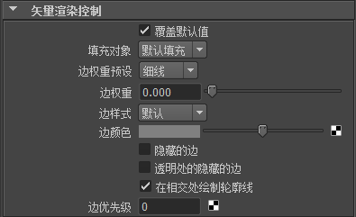

可以在矢量渲染时基于每种材质控制下列属性：
-
填充对象(Fill Object)
-
边权重预设(Edge Weight Presets)
-
边权重(Edge Weight)
-
边样式(Edge Style)
-
边颜色(Edge Color)
-
隐藏的边(Hidden Edges)
有关上述属性的详细信息，请参见渲染设置：Maya 向量选项卡。
-
透明处的隐藏的边(Hidden Edges On Transparent)
-
在相交处绘制轮廓线(Outlines At Intersections)
-
边优先级(Edge Priority)
有关上述属性的详细信息，请参见矢量渲染控制。
注：
这些属性只能在下列材质节点上使用：各向异性、Blinn、Lambert、Phong 和 Phong E。
您可以在“属性编辑器”(Attribute Editor)的“矢量渲染控制”(Vector Renderer Control)区域中找到材质节点（例如，phong1）的这些属性。
设定矢量渲染材质属性
- 选择具有要为其设定矢量渲染属性的材质的对象。
- 在“属性编辑器”(Attribute Editor)中，选择材质节点（例如，blinn1）。
- 打开“矢量渲染控制”(Vector Renderer Control)区域。
- 启用“覆盖默认值”(Overwrite Default Values)。
- 根据需要调整属性。
